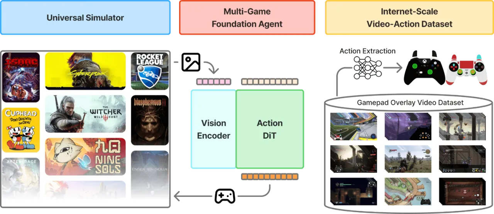
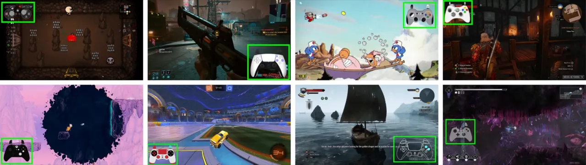
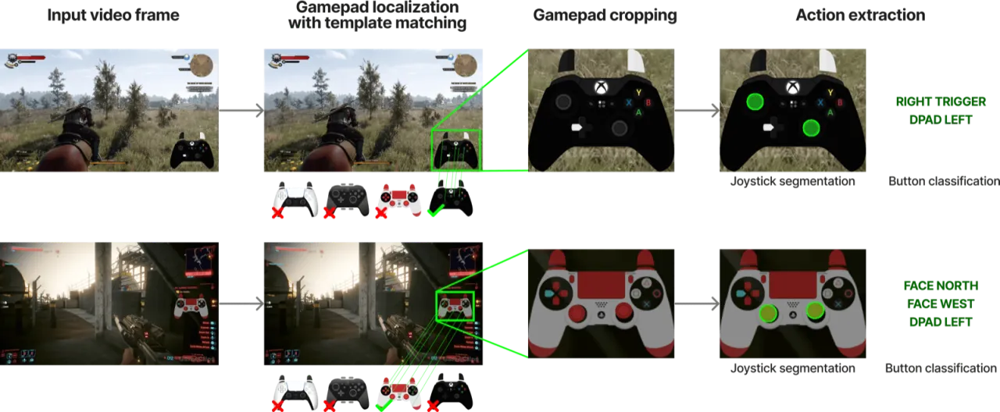
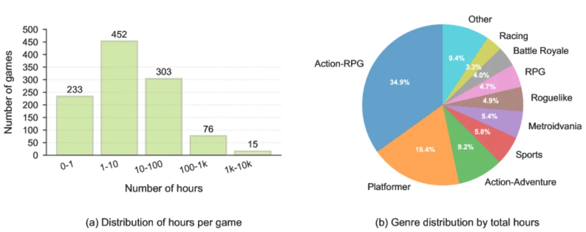
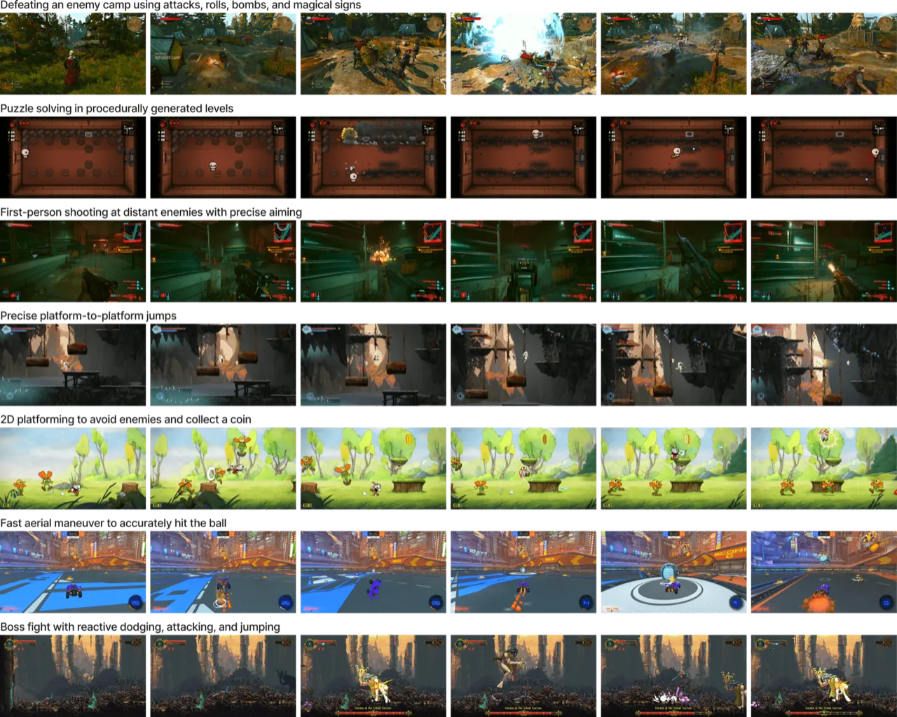
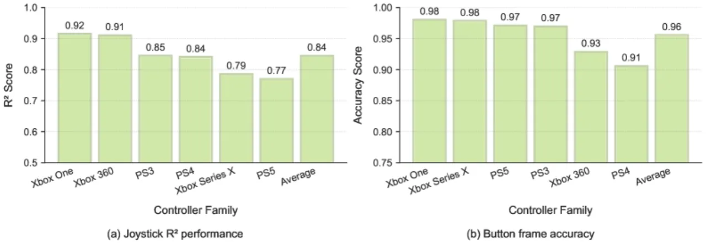
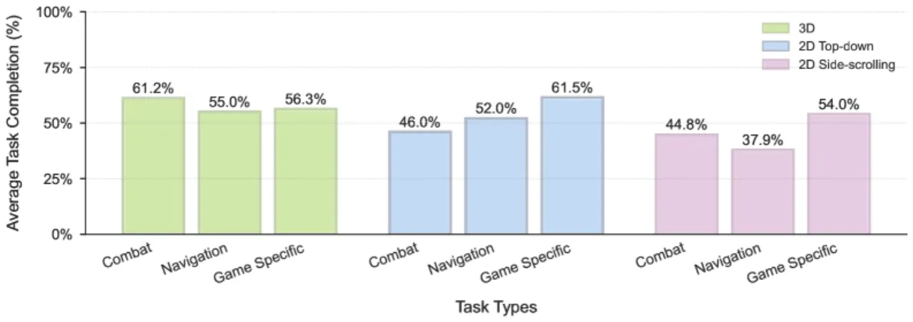
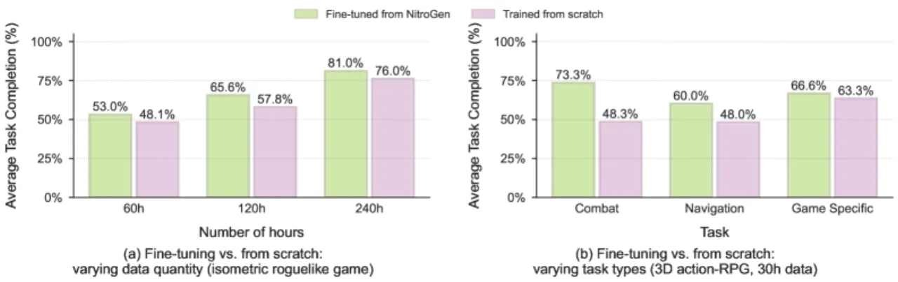

NitroGen 是首个在互联网规模游戏视频（40,000 小时、1,000+ 款游戏）上训练的开放视觉-动作基础模型。通过自动从手柄叠加层中提取动作，系统消除了昂贵的人工标注，并通过 flow matching 生成动作序列——迁移至未见过的游戏时，任务完成率最高提升 52%。
电子游戏是训练通用具身智能体的理想沙盒：它们种类繁多、规则多样、且无需物理硬件。然而，现有方法要么依赖手工设计的 API（如 Voyager），要么需要昂贵的强化学习训练（如 DQN、AlphaStar），要么人工演示数据规模极为有限。本文的核心问题是：能否直接从互联网上海量、嘈杂的玩家录像中，自动学习跨越千款游戏的视觉-动作策略？
"We present a vision-action foundation model trained on 40,000 hours of gameplay videos across more than 1,000 games."

NitroGen 由三个相互配合的核心模块构成：（1）互联网规模视频-动作数据集的自动构建流水线；（2）涵盖 10 款游戏、30 个任务的多游戏评测基准；（3）基于 flow matching 的统一视觉-动作基础模型。
研究者从视频平台抓取了 71,000 小时含手柄叠加层（gamepad overlay）的游戏录像，来自 818 位创作者的 38,739 个视频。经过三阶段流水线处理后，保留了 40,000 小时高质量数据：



模型以 flow matching 框架为核心，通过扩散变换器（Diffusion Transformer, DiT）在给定单帧视觉观测的条件下，生成未来的动作序列块（action chunk）：

评测在统一 Gymnasium API 封装的 10 款商业游戏（5 款 2D、5 款 3D）上进行，覆盖格斗、导航、游戏特有机制共 30 个任务，采用人工评估衡量任务完成率（task success rate）。



| 游戏类型 / 任务类别 | 从头训练（Scratch） | NitroGen 预训练微调 | 相对提升 |
|---|---|---|---|
| 等距俯视 Roguelike（平均） | 基线 | +10% 相对提升 | +10% |
| 3D Action-RPG（平均） | 基线 | +25% 相对提升 | +25% |
| 3D Action-RPG · 格斗任务 | 基线 | 最高 +52% 相对提升 | +52% |
| 3D Action-RPG · 导航任务 | 基线 | +25% 相对提升 | +25% |
| 3D Action-RPG · 游戏特有任务 | 基线 | +5% 相对提升 | +5% |
研究者开发了通用 Gymnasium API 封装器，支持任意商业游戏接入，并设计了跨 10 款游戏的 30 个任务，覆盖格斗（combat）、导航（navigation）和游戏特有机制（game-specific mechanics）三大类别。所有任务均采用人工评估以保证评测可靠性。
NitroGen 是"System-1"反应式模型，依赖单帧视觉输入生成短期动作序列，无法进行多步推理、任务分解或响应自然语言指令。作者指出未来工作包括语言跟随（language following）和强化学习后训练（RL post-training）。
数据集中 Action-RPG 占 34.9%，Platformer 占 18.4%，而策略游戏（strategy）和键盘主导（keyboard-centric）游戏代表性不足，导致模型在这些类型上的泛化能力可能受限。
视频中的动作提取存在固有延迟（视频编码延迟、手柄叠加层刷新延迟）和各创作者手柄型号/布局差异带来的解析误差。尽管摇杆 R²=0.84、按键精度=0.96，但残余噪声仍可能限制精细操控任务的学习效果。
30 个评测任务的成功率判断依赖人工评估，难以扩展到大规模自动化测试。与 RL 环境不同，商业游戏缺乏程序化奖励信号，使得大规模、可重复的定量比较存在挑战。